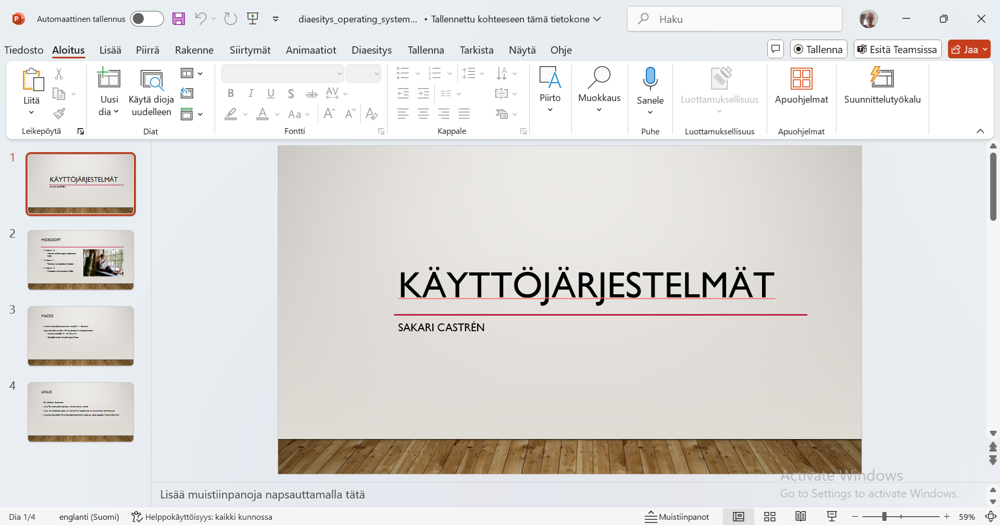

Microsoft PowerPoint on Microsoftin Microsoft Office -ohjelmistopakettiin kuuluva esitysgrafiikkaohjelma, joka on kehitetty Windows- ja OS X -käyttöjärjestelmiin. lähde? Ensimmäinen Powerpoint-versio julkaistiin Apple Macintoshille vuonna 1987. Ohjelmiston alkuperäinen kehittäjä oli Forethought-niminen yritys, jonka Microsoft osti pian Powerpoint-julkaisun jälkeen samana vuonna. Lähde: https://fi.wikipedia.org/wiki/Microsoft_PowerPoint
